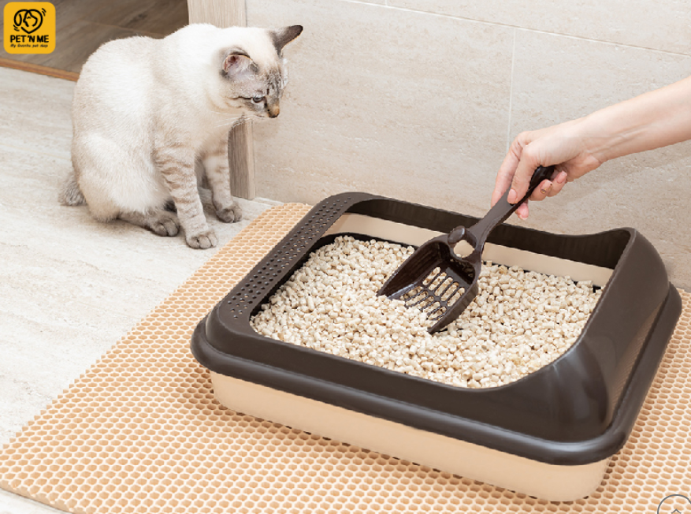
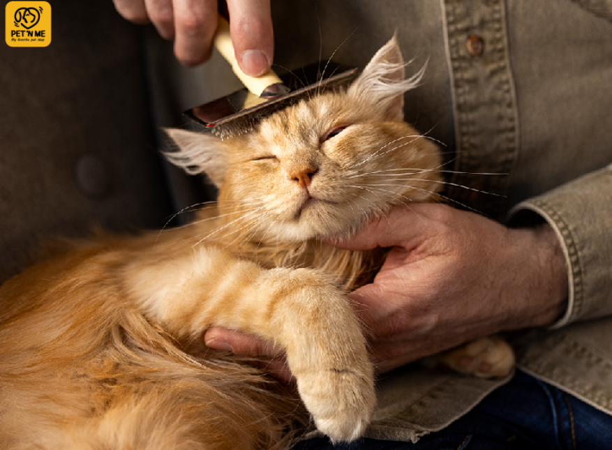
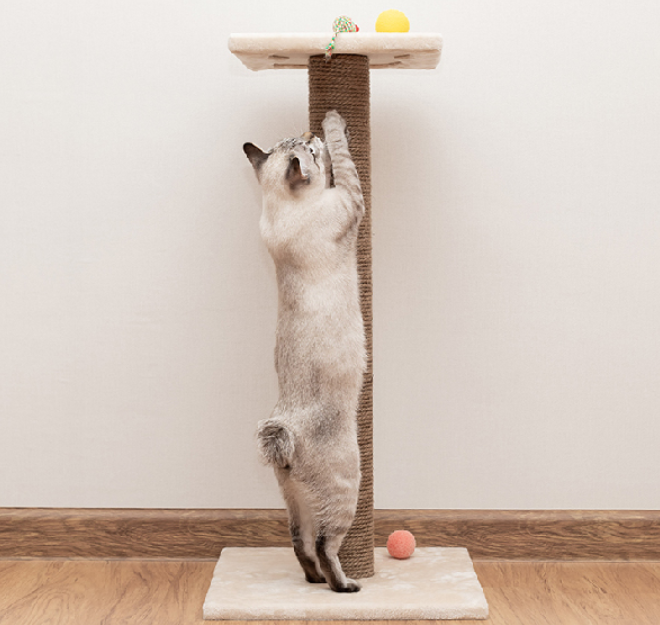
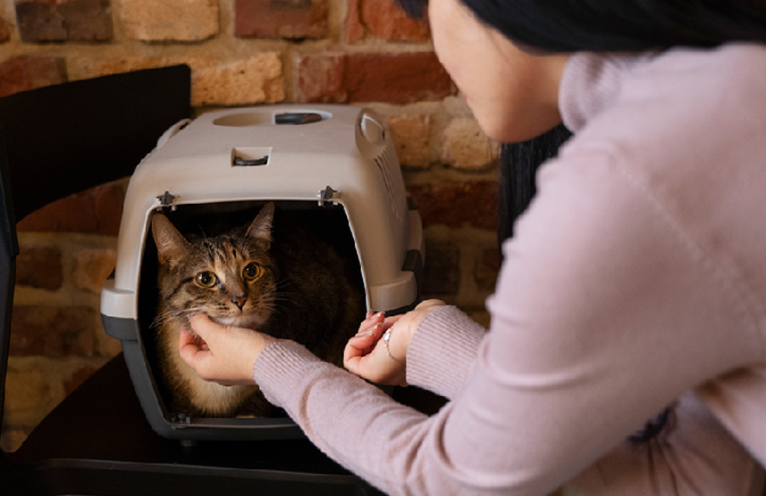

10 ของใช้จำเป็นในบ้านสำหรับน้องแมวตัวใหม่

1.อาหารแมว
ควรเลือกชามที่ผลิตจากวัสดุที่ปลอดภัยสามารถล้างทำความสะอาดได้ง่ายเช่นชามเซรามิคหรือชามสแตนเลส
2.ชามใส่อาหารและน้ำ
อาหารคือสิ่งจำเป็นที่สุดสำหรับน้องแมวควรเลือกอาหารคุณภาพสูงที่เหมาะสมกับช่วงวัย และความต้องการเพื่อให้น้องแมวมีสุขภาพร่างกายที่สมบูรณ์แข็งแรงเจริญเติบโตสมวัย
3.กระบะทรายแมว ห้องน้ำแมว
ควรเลือกกระบะทรายที่น้องแมวสามารถเข้าออกได้สะดวก มีขนาดเหมาะสมกับขนาดตัวของน้องแมว ซึ่งขนาดที่เหมาะสมคือ น้องแมวสามารถหมุนรอบตัวได้เมื่ออยู่ในนั้น
4.ทรายแมว
ทรายแมวมีหลากหลายแบบให้เลือกมากมาย ทั้งแบบจับตัวเป็นก้อนเร็ว ลดกลิ่น ไร้ฝุ่น หรือแบบทำจากวัสดุธรรมชาติที่ย่อยสลายได้ แต่ไม่ว่าจะเลือกใช้สูตรไหนก็ตาม ควรทำความสะอาดกระบะทรายและเปลี่ยนทรายแมวเป็นประจำ

5.เตียงนอน เบาะนอน
แม้ว่าน้องแมวจะชอบแอบนอนตามมุมต่างๆ แต่การจัดเตรียมพื้นที่ส่วนตัวพร้อมที่นอนหรือเบาะนอนนุ่มๆไว้ก็จะช่วยให้น้องแมวหลับสบายและรู้สึกปลอดภัยมากขึ้น
6.ที่ลับเล็บแมว
น้องแมวมีสัญชาตญาณนักล่าอยู่ในตัว จึงเป็นเรื่องปกติที่พวกเค้าจะลับเล็บให้คมอยู่เสมอ แต่ถ้าปล่อยให้น้องแมวลับเล็บกับเฟอร์นิเจอร์ในบ้านคงไม่ดีแน่ ควรจัดเตรียมที่ลับเล็บแมวไว้เพื่อให้น้องๆได้ลับเล็บถูกที่ และยังช่วยให้น้องๆได้ออกกำลังกายไปในตัวอีกด้วย
7.แชมพูอาบน้ำ
โดยปกติน้องแมวจะเลียขนทำความสะอาดตัวเองเป็นประจำอยู่แล้ว แต่การทำความสะอาดด้วยแชมพูสำหรับแมวก็จะช่วยให้น้องแมวตัวสะอาดมากยิ่งขึ้น นอกจากนี้ ยังมีสูตรต่างๆที่ตอบโจทย์ความต้องการโดยเฉพาะ เช่น สูตรบำรุงขนให้นุ่มสวยเงางาม สูตรลดขนร่วง หรือแชมพูโฟมแห้งสำหรับน้องแมวที่ป่วยหรือไม่ชอบน้ำ
8.หวี แปรงขน
หวีและแปรงขนก็สำคัญไม่แพ้กัน แปรงสลิคเกอร์สามารถช่วยแก้ขนพันกันและกำจัดขนที่ตายแล้ว ส่วนแปรงซิลิโคนเหมาะสำหรับผิวบอบบางและยังช่วยนวดผ่อนคลาย

9.ของเล่น
ของเล่นช่วยให้น้องแมวรู้สึกผ่อนคลายและได้ขยับเคลื่อนไหวร่างกาย การเล่นกับน้องแมวยังช่วยสร้างสายสัมพันธ์ที่ดีระหว่างกันอีกด้วย

10.กรงหิ้ว กระเป๋าเดินทางแมว
ใช้สำหรับพาน้องแมวไปข้างนอก ไม่ว่าจะเดินทางไปเที่ยวหรือไปหาคุณหมอ การให้น้องอยู่ในกรงขณะเดินทางจะช่วยให้น้องแมวรู้สึกปลอดภัย กรงหิ้วหรือกระเป๋าเดินทางที่เหมาะสมควรมีช่องระบายให้อากาศถ่ายเทสะดวก อยู่สบาย ไม่อึดอัด
